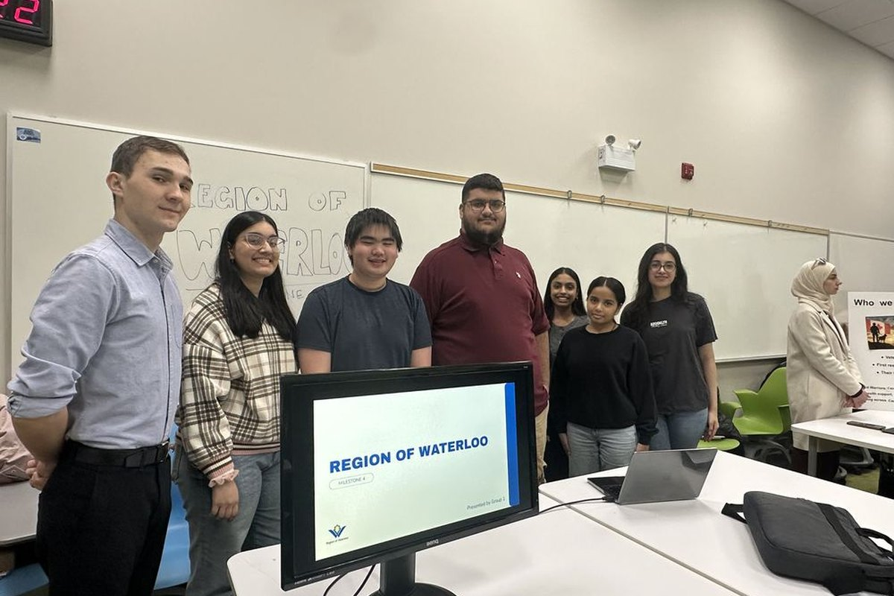
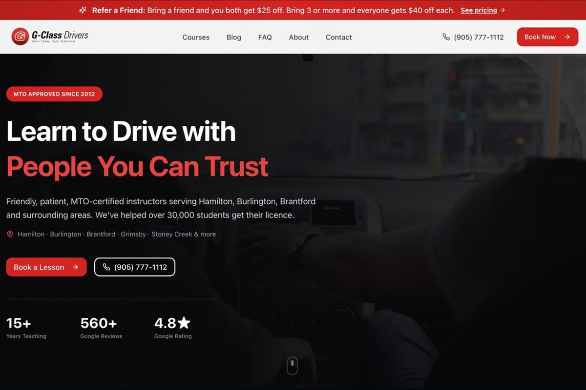
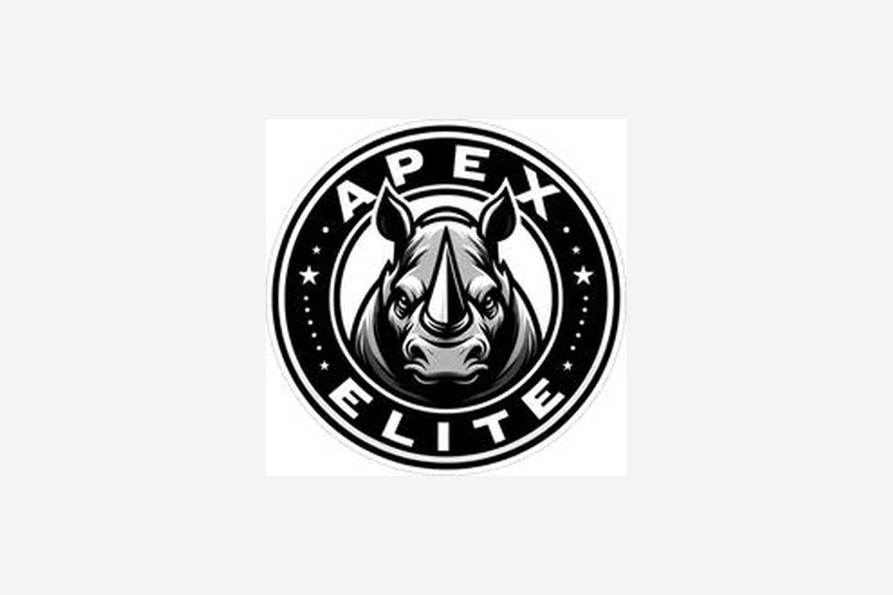

Hello! I'm Hannan Khan, UX designer and researcher at Wilfrid Laurier University.
Good design is invisible. Bad design is a barrier.
I do research, design and usability testing on real client work, a family driving school and Arduino builds. Accessibility is where I started and it's still what I care about most.

My aunt Isma is the reason I'm in UX.
She lives with a rare eye disability. Watching her fight with everyday apps and websites showed me how much design matters. If she can use it without frustration, I'm on the right track.
Technology & Transformation, May to August 2027
BDes, UX Design
Wilfrid Laurier University, graduating 2028. Google UX Design Certificate. Dean's Honour Roll.
- User interviews
- Usability testing
- Surveys
- Personas
- Service blueprints
- Wireframing
- Prototyping
- Figma
- Figma Make
- HTML/CSS
- Arduino
- Accessible design
Selected work
Featured case studies
A closer look at the problem, my process and the result behind three projects with real clients.
Region of Waterloo
Region staff couldn't find guidance scattered across Excel, Teams and SharePoint. I researched what they actually needed and designed a searchable playbook built around checklists, not documents.

G-Class Drivers
8 driver interviews surfaced a pop-up that blocked almost every task on the live site. I rebuilt the site around those findings, and now I'm taking the whole office digital with student, instructor and office apps.

Apex Elite Security
Property managers check licensing before anything else. I built 13 pages that lead with credentials, segment by property type, and never fake a licence number.

More work
Builds, services and studies
Physical product builds, service design and self-directed studies.

Reminder Box
Phone reminders get swiped away. I built a physical Arduino box that uses light and sound instead.

Posture Check
An ultrasonic sensor that nudges instead of scolds, because students said they'd unplug anything harsher.

Cinema Seat Reservation
The real bottleneck wasn't the seat map. It was finding a movie. Two rounds of testing reshaped discovery.

Laurier Wellness Services
65% of students didn't know what wellness services existed. I mapped the full service blueprint.

Zinger Music App
People stay on Spotify because of switching cost, not UX. I designed around three real personas.

Money Management
20+ interviews for a real Laurier client shaped 15+ solution concepts for students.
What I do
How I can help
I can join at research, at design, or take something from a messy problem to a tested build.

User research
Interviews, surveys, usability tests and synthesis people can act on.

Service design
Blueprints and journeys that show where a service breaks.

Web design
Sites built around the task people came to do, then shipped.

Mobile apps
Flows that keep one job per screen, from wireframe to TestFlight.

Physical prototyping
Arduino builds when the answer isn't another screen.

Accessibility
Designs that work for everyone, checked against real needs.
Experience
Where I've worked
- May to Aug 2027Business Analyst InternDeloitte, Technology & TransformationNext
- Sep 2025 to presentUX Design Intern, Product + UX LeadG-Class Drivers, research, website and office appsNow
- Jul 2024 to presentOffice AdministratorG-Class Drivers
- CurrentPresidentPakistani Student Association, Laurier Brantford
Have something people struggle to use?
I'm open to a UX co-op for Fall 2027 to Spring 2028. Email is the fastest way to reach me.